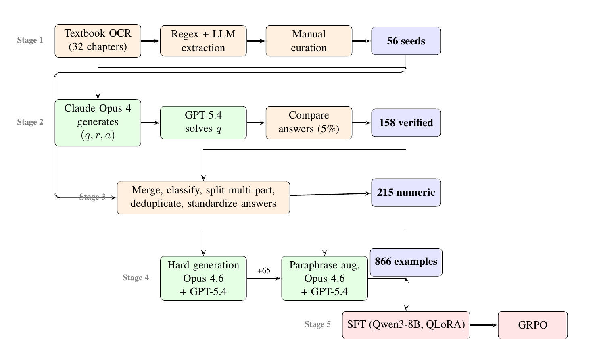

Work · LLM post-training research
There was no training data for reliability engineering, so we made some: 56 textbook problems became 866 verified question-answer pairs, and an 8B model went from 63.6% to 82.2% on them. The interesting findings are about what did not work.
Reliability engineering (Weibull and exponential lifetimes, mean time to failure, k-out-of-n systems, fault trees, Bayesian updating of failure rates) had no large public question-answer dataset and no established benchmark, and the lab had found frontier models unreliable on its own hand-written problems. Could a general 8B model be adapted to the domain starting from a handful of textbook exercises, on a student's compute budget?
Two textbooks were digitised (32 chapters) and mined with regular expressions plus a language-model validator into 56 curated seed triplets of question, worked reasoning and numeric answer. A Self-Instruct loop then generated new problems in the style of the seeds, with one change that mattered: instead of the usual same-model consistency filter, every generated problem was solved independently by a second frontier model and kept only if the two answers agreed within 5%, with a semantic fallback for non-numeric cases. That produced 158 verified items. Merging them with the textbook seeds and cleaning the lot (splitting multi-part problems, deduplication, unit stripping) gave 256 entries, of which the 215 with numeric answers became the first training set. A "hard generation" round added 65 questions and a MetaMath-style paraphrase round, in which numbers and formulas are frozen and only the wording changes, added 586 more, for 866.

Two things we learned about synthetic data along the way. First, a self-instruct ceiling: generators write problems inside their own competence, so baseline models scored 92 to 97% on the generated questions but only 68 to 76% on the textbook ones. Verification does not fix that; it only removes wrong answers. Second, surface diversity beat difficulty: the 65 hard questions moved accuracy by +2.0 points (p = 0.69), the 586 paraphrases by +18.6 (p = 0.002).
Qwen3-8B, 4-bit QLoRA through Unsloth, LoRA rank 16 and alpha 32 on all attention and MLP projections, NEFTune noise, thinking mode off, greedy decoding at evaluation, a fresh base model per fold, and a Wilcoxon signed-rank test over the per-fold accuracies. Early stopping with patience two selected epoch four regardless of the maximum I set. On the 866-example set with 10 folds the base model answers 63.6% correctly and the fine-tuned model 82.2%; every fold improved, by 12.6 to 26.4 points, and 206 questions flipped from wrong to right against 45 the other way.
Base-model choice dominated every other decision: on the same 215 numeric questions Qwen3-8B scored 70.7% zero-shot against 41.4% for Llama 3.1 8B (37.5% over the full 256-question cleaned set, which also includes formula and text items). Two evaluation lessons came out of the early Qwen3-8B runs. An early run reported +7.0 points; re-run with greedy decoding it was +2.3, the rest being sampling variance, and every cross-validation number from that re-run on, the +18.6 included, is greedy. And fine-tuning a thinking model on polished non-thinking solutions collapsed its reasoning: the fine-tuned model emitted empty thinking blocks and answers eight times shorter than the base model's.
On a 500-question sample of the same benchmark, run through an API at temperature 0.1 with no extended thinking requested (o3-mini at its lowest reasoning effort; Gemini 3.1 Pro, whose thinking cannot be switched off, at its default level), Claude Sonnet 4.6 scored 92.4%, o3-mini 86.4% and Gemini 3.1 Pro 76.4% (both on the answers they returned in a parseable form). The fine-tuned 8B model's 82.2% sits between them. The comparison is informative but not clean: the small model's number is in-distribution cross-validation on a paraphrase-heavy set, the frontier numbers are zero-shot.
The second stage, led by my co-author, applied GRPO with graded verifiable rewards and DAPO-style dynamic sampling on the 266 questions the base model solves inconsistently (one to three of four samples). Starting from a separate fine-tuning checkpoint trained only on the other 600 questions (the ones screened out of the GRPO set), not the 82.2% headline adapter, accuracy on those 266 questions rose from 50.8% to 57.9% at step 80 (McNemar p = 0.056, not significant at 5%), then declined with more steps. Direct preference optimisation had earlier hurt (−1.7 points) and an initial GRPO attempt with a judge-model reward added only +0.5.
The caveat that belongs next to the headline: the +18.6 points is in-distribution. Cross-validation folds were shuffled at the question level, so paraphrases of a training question can sit in the test fold. On a 54-question independent holdout the picture is weaker: a fine-tuned adapter trained on a 600-question subset fell to 33.3% against the base model's 53.7% (p = 0.019), while the headline adapter evaluated greedily scored 55.6% against 59.3%, a difference within noise. The GRPO variants stayed near the base model on that holdout. We read this as a small-data forgetting problem that the manuscript's next revision, with grouped folds, has to settle before any claim of transfer.